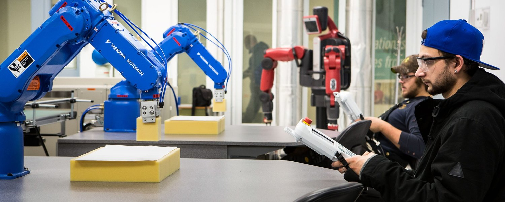
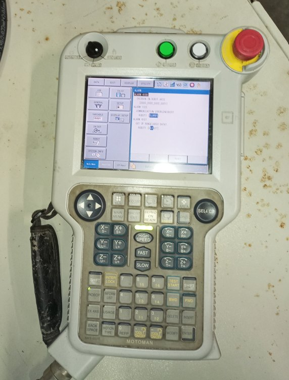
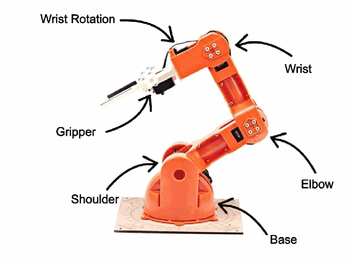

Project Case Study · Jan – Mar 2026
Industrial Robot Programming and Cell Integration
Two robotics projects from the same course. One was thirty hours on a Yaskawa Motoman, learning to jog it, teach points, and write jobs on the pendant. The other was building a small work cell around a six-axis arm: an Arduino running the motion, a Siemens PLC and HMI giving the commands over hardwired I/O, and an emergency stop on a hardware interrupt. Both were done with a lab partner.

Programming the Motoman
Ten three-hour sessions. The first thing you learn is where the robot is allowed to be: the maximum envelope it can physically reach, the operating envelope it works inside, and the restricted zones it has to stay out of, because that is where the panels, the fixtures and the people are.
Teaching runs through the three-position switch on the back of the pendant. Only the middle position lets the servos move. Let go and it stops. Squeeze it hard and it stops. The robot moves while somebody is deliberately holding it, and not otherwise.
Jogging works in several frames, tool, joint and user, with a pointer attachment defining the tool center point. The frame you pick changes what the arrow keys actually do, so switching between them without thinking about it is most of getting the arm where you want it.
The jobs
A job in INFORM opens with NOP, runs down numbered steps and finishes at END. What I used in them:
- MOVJ for fast joint moves, MOVL for straight lines, MOVC for arcs off three points, MOVS for curves.
- Position level to control accuracy. PL = 0 lands exactly on a taught point, which is what a pick or a place needs. A higher PL rounds the corner and saves cycle time where precision does not matter.
- IF, WAIT UNTIL, TIMER and PAUSE for logic and timing.
- JUMP and LABEL to loop a cycle, and sub-jobs called from a master job.
- Gripper open and close, plus reading inputs and writing outputs.
Then the applications. A foam cube moved corner to corner on a loop. Paper cups stacked into a pyramid and shifted across the table, which is palletizing in miniature. Four letters traced from taught points, each letter its own job, called in order by a master job.
All of them had the same shape: start at home, move above the part, drop straight in, grip, lift clear, transfer, approach the drop-off from above, release, retreat, go home. That shape is the part that transfers to any robot.
The I/O work used eight switches and eight lamps, read with IF and WAIT UNTIL, written with OT# for a single output or OG# for a group by binary weight. It is a trainer panel, but the handshake is the real one: wait for the signal that says the part is there, do your bit, set an output so the next machine can move.
When it alarms
Robots stop, and getting them going again is the job. We went through the alarm classes and what each needs, from a reset, to a cancel on a minor error, to recording the code and escalating a major fault. My own troubleshooting was duller than that and probably more typical: a taught point slightly off, a C-move missing its third point, I/O logic waiting on a bit that was never coming.

Building a cell around a small arm
The second project came at it from the other end. Instead of programming a finished robot, I built the system around a small six-axis arm.

A Siemens PLC and HMI give the operator start, stop and a speed choice. Those leave as discrete signals, land on a colour-coded DIN-rail terminal strip, and are read by an Arduino that runs the motion. A level switch tells it a part has arrived. The emergency stop button goes to an interrupt pin. Everything lands on the terminal strip rather than running point to point, so somebody who did not build it can still trace it.
The motion itself is a table. Thirteen poses, one array per joint, stepped through by index, with a separate function doing each move and re-checking the safety state before it commits. Re-teaching the cell means editing numbers, not rewriting logic. It is the same reason industrial robots keep position data out of the program flow. The part being handled was modelled in Solid Edge and 3D printed, then the grip was tuned around the real thing rather than the drawing.
The e-stop, and where it stops being real safety
The interrupt routine does one thing: set a flag. The response runs in the main loop, holding the base and wrist where they are, lowering the arm to the surface, opening the gripper so the part is set down instead of dropped, then latching everything until someone resets it. The normal stop behaves differently and lets the cycle finish before sending the arm home.
Worth saying plainly: that is emergency stop logic, not a compliant safety system. On a real cell the stop has to be hardwired through a safety relay that removes power, rated to whatever the risk assessment calls for, and it cannot depend on firmware still running. The sequencing belongs in software. The stopping does not.
The fault that was not software
For a while the shoulder joint would not hold position under load and the arm kept sagging, which made repeatable motion impossible. It looked like a control problem. It was a gear that needed securing and a support spring that had come off. We fixed the mechanism and the cycle went repeatable in both speed modes.
Two others cost real time. The servo library and the external interrupt were competing for the same hardware, so the I/O had to be remapped to keep a proper interrupt pin free for the e-stop. And the part sensor kept triggering on noise until the switch was moved and debounced in software. What stuck with me is to work out which layer the fault is in before changing anything, because no amount of careful code fixes a spring that fell off.
What carries over to other robots
The pendant language changes between manufacturers. The rest of it does not. Frames and a defined tool point, taught points with deliberate approach and retreat moves, accuracy traded against cycle time, I/O handshaking with the machines around the robot, a known home position, and the safety discipline. My programming hours are on Yaskawa, so another controller would mean learning its specifics, but the thinking underneath is the same and the integration side is where I have spent the most time.
What this shows
Programming a real industrial robot on its pendant, and building the system around one: wiring and documenting the interface, handshaking over discrete I/O, keeping position data out of the program flow, deciding what happens when somebody hits the stop button, and tracking a fault to the layer it actually lives in.